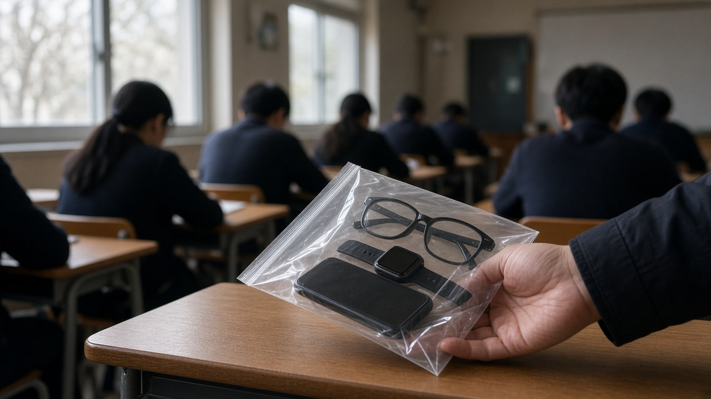
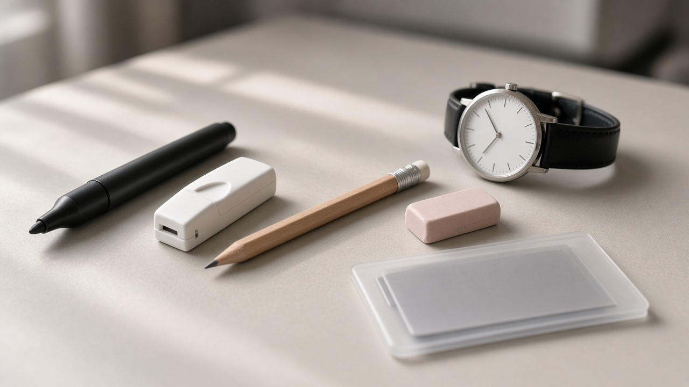
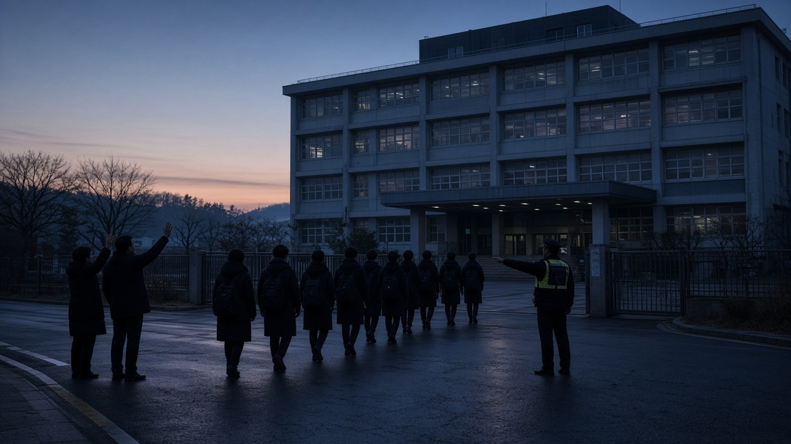

수능 11월 19일, 스마트워치와 스마트안경은 차고만 있어도 다음 해 응시까지 막혀요 1교시 전 제출 규칙 정리

수능이 이제 3주도 안 남았어요.
공부 마무리도 바쁜데, 시험장에 무엇을 들고 가도 되는지는 의외로 헷갈리는 부분이 많죠.
평소 차던 스마트워치, 습관처럼 주머니에 넣는 휴대폰, 쉬는 시간에 보려던 문제집까지, 작은 실수 하나로 1년 공부가 무효가 될 수 있어요.
오늘은 한국교육과정평가원 수험생 유의사항과 시도교육청 부정행위 예방 안내문을 바탕으로, 2027학년도 수능에서 꼭 알아야 할 물품 규칙과 처벌 기준을 정리해 볼게요.
전자기기는 쓰지 않아도 가지고 있는 것만으로 문제가 돼요
2027학년도 수능은 2026년 11월 19일 목요일에 전국 1,312개 시험장에서 치러지고, 교육부 발표로는 551,864명이 응시할 예정이에요.
수험생은 당일 오전 8시 10분까지 지정된 시험실에 들어가 있어야 하고, 시험이 시작된 뒤에는 들어갈 수 없어요.
가장 먼저 기억할 점은 시험 중에 쓰는지, 어떤 기능이 있는지와 상관없이 모든 전자기기가 원칙적으로 시험장 반입 금지라는 거예요.
통신이나 블루투스, 결제 기능이 있는 휴대폰, 스마트워치, 스마트안경, 태블릿, 이어폰이 여기에 들어가요.
화면이 있는 전자사전, 화면 표시가 있는 텀블러와 전자시계, 그리고 전자담배나 보조배터리 같은 충전식 물품도 모두 금지예요.
올해는 인공지능 기능이 들어간 기기도 반입 금지 대상에 포함된다고 평가원이 밝혔어요.

실수로 가져왔다면 1교시 시작 전에 감독관에게 내면 돼요
그렇다고 휴대폰을 집에 두고 오는 게 불가능한 경우도 있죠.
이럴 때는 1교시가 시작되기 전에 감독관 지시에 따라 제출하면 되고, 내가 응시하는 모든 영역 시험이 끝난 뒤 돌려받아요.
문제는 제출하지 않았을 때예요. 1교시 전에 내지 않으면 쓰지 않았더라도 부정행위로 처리되고, 시험 시간이든 쉬는 시간이든 적발되면 마찬가지예요.
특히 스마트워치나 스마트안경 같은 무선기기를 제출하지 않고 시험 중 착용만 해도 그해 시험이 무효가 되고, 다음 해 1년 동안 수능 응시 자격까지 정지돼요.
서울시교육청은 올해 각 시험장에 스마트안경 전담 요원을 두기로 했고, 감독관이 본인 확인 때 안경을 살펴보자고 요청할 수 있는데 이를 거부해도 부정행위가 돼요.
뉴시스가 보도한 교육부 자료를 보면 최근 5년간 수능 부정행위는 1,229건이었고, 그중 반입 금지 물품 미제출이 348건으로 두 번째로 많았어요. 적발된 기기는 휴대폰이 113건, 스마트워치가 아닌 전자시계가 107건이었어요.
책상 위에 둘 수 있는 물건은 따로 정해져 있어요
시험 중에도 가지고 있을 수 있는 물품은 신분증, 수험표, 검은색 컴퓨터용 사인펜, 흰색 수정테이프, 흑색 연필, 지우개, 흑색 0.5밀리미터 샤프심이에요.
샤프는 시험실에서 감독관이 일괄로 나눠 주기 때문에 개인 샤프는 쓸 수 없어요.
시계는 시침과 분침이 있는 아날로그 시계여야 하고, 통신이나 결제 기능, 전자 화면이 하나도 없어야 해요. 감독관이 1교시와 3교시에 시계를 확인하는데, 3교시에 안 되는 시계로 판정돼도 부정행위로 처리돼요.
신분증은 주민등록증, 운전면허증, 주민등록번호가 표시된 유효한 여권, 청소년증, 사진과 학교장 직인이 있는 학생증 등이 인정돼요.
모바일 주민등록증이나 모바일 운전면허증은 수능 당일 신분 확인용으로 쓸 수 없으니 꼭 실물을 챙기세요.
연습장, 기름종이, 볼펜 같은 물건은 쉬는 시간에는 괜찮지만 시험 중에 갖고 있으면 압수되고, 교과서나 문제집, 기출문제지는 시험 중 적발되면 바로 부정행위예요. 이런 물건은 매 교시 시작 전에 가방에 넣어 시험실 앞에 내 두면 돼요.

가장 많이 걸리는 건 종료령 뒤 답안 작성과 4교시예요
같은 5년 통계에서 가장 많은 유형은 시험 종료령이 울린 뒤에도 답을 쓰거나 고친 경우로 479건이었어요.
종료령이 울리면 바로 필기구를 내려놓아야 하고, 종료령 뒤에 가채점표를 적는 것도 위반이 될 수 있어요.
4교시 응시 방법 위반도 286건이나 됐어요. 4교시에는 탐구 과목 문제지가 한꺼번에 나오는데, 첫 번째 선택 과목 시간에는 그 과목 문제지만 책상에 두고 나머지는 접어서 봉투에 넣어 바닥에 두어야 해요.
첫 번째 과목 시간에 두 번째 과목 문제지를 보거나, 두 번째 과목 시간에 첫 번째 과목 답을 고치면 부정행위가 돼요.
그리고 한국사는 필수라서 4교시 한국사에 응시하지 않으면 수능 성적 전체가 무효가 되고 성적통지표도 받지 못해요.
부정행위 처분은 이렇게 두 갈래로 나뉘어요
대학수학능력시험 관리규정에 따르면 부정행위는 모두 그해 시험이 무효가 돼요.
다른 수험생 답안을 보거나 무선기기를 쓰는 것, 대리시험처럼 무거운 다섯 가지 유형은 여기에 더해 다음 해 1년간 응시 자격이 정지돼요.
반입 금지 물품 미제출, 종료령 뒤 답안 작성 같은 경미한 유형은 그해 시험만 무효가 되지만, 1년 동안 준비한 시험이 사라진다는 점은 똑같아요.
사안에 따라 위계에 의한 공무집행방해로 형사처벌될 수 있다는 안내도 함께 나와 있어요.
예비소집은 11월 18일이고 이날 수험표를 받아 선택 과목이 맞는지, 시험장과 시험실 위치가 어디인지 확인해 두면 좋아요. 성적은 12월 11일에 통지돼요.
오늘 내용은 11월 2일 기준 공식 안내를 정리한 일반 정보예요. 시험 당일에는 시험실 칠판에 붙는 안내와 감독관 지시가 가장 우선이니 꼭 귀 기울여 주세요.
참고 자료 한국교육과정평가원 2027학년도 대학수학능력시험 수험생 유의사항, 서울특별시교육청 2027학년도 수능 부정행위 예방 관련 안내문, 교육부 2027학년도 수능 시행 지원대책 2026년 10월 20일, 뉴시스 2026년 9월 16일 보도, 키즈맘 서울 수능 응시자 보도
태그 수능 2027수능 수능유의사항 수능반입금지물품 스마트워치 스마트안경 수능부정행위 수능신분증 수능시계 수능예비소집 수험생